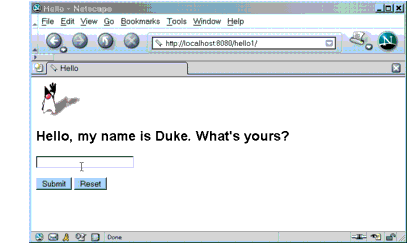
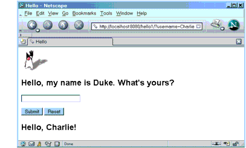

Web Application Life Cycle
A web application consists of web components, static resource files such as images, and helper classes and libraries. The web container provides many supporting services that enhance the capabilities of web components and make them easier to develop. However, because a web application must take these services into account, the process for creating and running a web application is different from that of traditional stand-alone Java classes. The process for creating, deploying, and executing a web application can be summarized as follows:
- Develop the web component code.
- Develop the web application deployment descriptor.
- Compile the web application components and helper classes referenced by the components.
- Optionally package the application into a deployable unit.
- Deploy the application into a web container.
- Access a URL that references the web application.
Developing web component code is covered in the later chapters. Steps 2 through 4 are expanded on in the following sections and illustrated with a Hello, World-style presentation-oriented application. This application allows a user to enter a name into an HTML form (Figure 3-3) and then displays a greeting after the name is submitted (Figure 3-4).


The Hello application contains two web components that generate the greeting and the response. This chapter discusses two versions of the application: a JSP version called
hello1, in which the components are implemented by two JSP pages(index.jspandresponse.jsp) and a servlet version calledhello2, in which the components are implemented by two servlet classes(GreetingServlet.javaandResponseServlet.java). The two versions are used to illustrate tasks involved in packaging, deploying, configuring, and running an application that contains web components. The section About the Examples explains how to get the code for these examples. After you install the tutorial bundle, the source code for the examples is in<INSTALL>/j2eetutorial14/examples/web/hello1/and<INSTALL>/j2eetutorial14/examples/web/hello2/.
All of the material in The J2EE(TM) 1.4 Tutorial is copyright-protected and may not be published in other works without express written permission from Sun Microsystems.